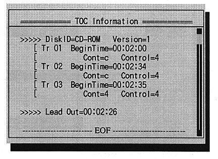

* Log Indication
Mode for viewing log information. When selected, the color of the top bar changes from purple to yellow, indicating that you have entered "LogView" mode by changing "View" in the mode window to "LogView".
By the cursor [UP], [DOWN], [PAGEUP], [PAGEDOWN], you can see up to 500 lines before the last displayed log information.
You can get out of this mode with [ESC].
−Always
A mode that displays all log information. When selected, "View" in the mode window changes to "Always".
−Error Only
∙ Mode that displays only error information. When selected, "View" in the mode window changes to "Error".
* FAD Form
∙ Select the frame address display format for the log window.
−Decimal
10Decimal number display.
−Hexadecimal
Hex display.
●Information
* TOC Information
Mode for viewing TOC information. Select to open the TOC information window in the center of the screen.
